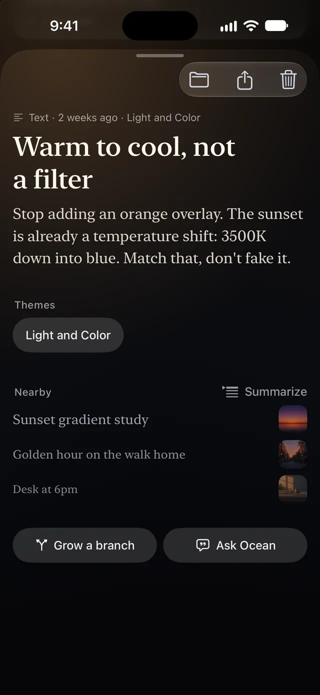
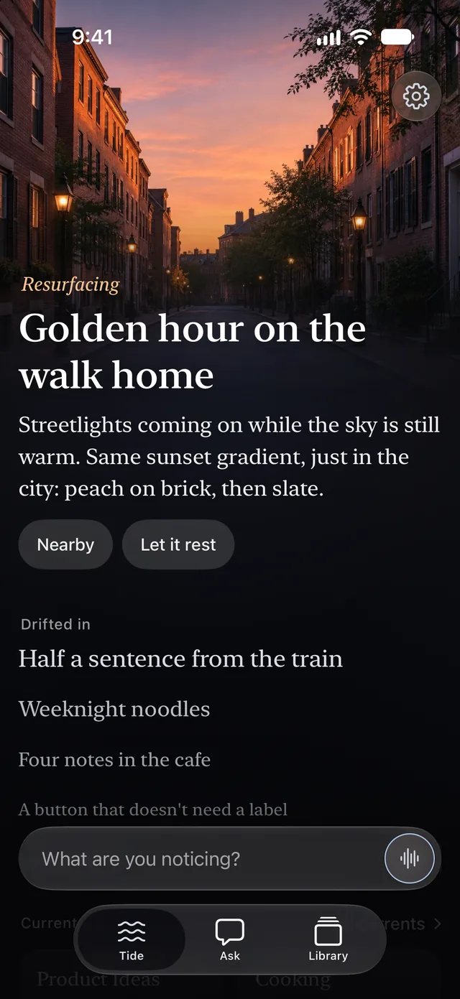
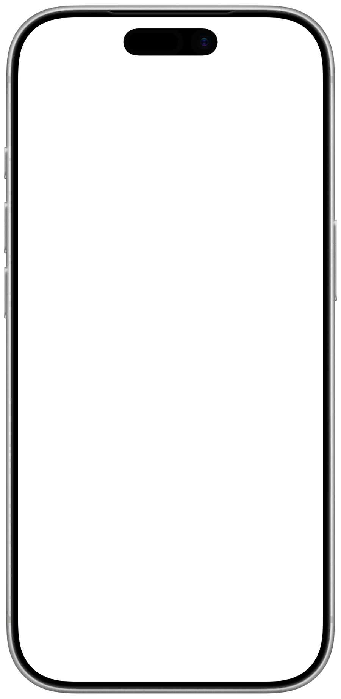
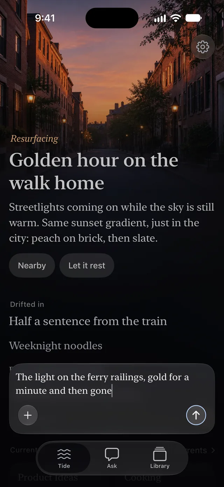
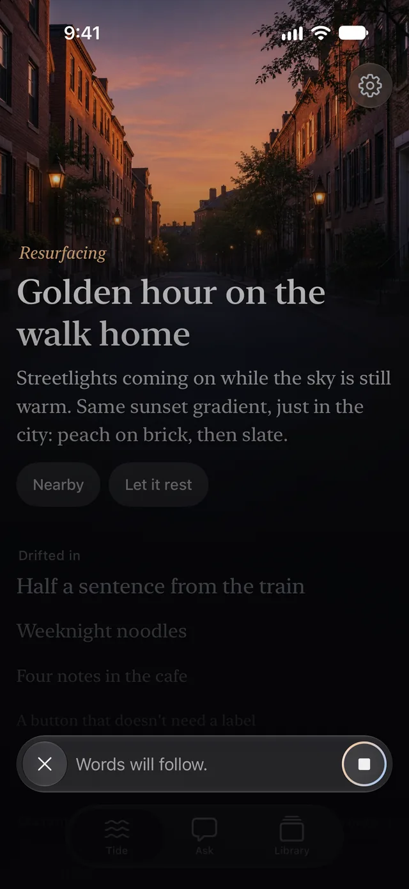
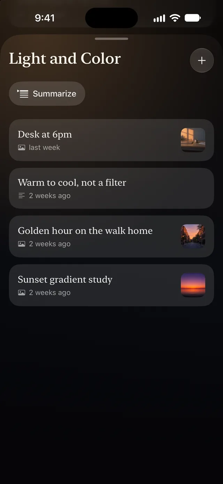
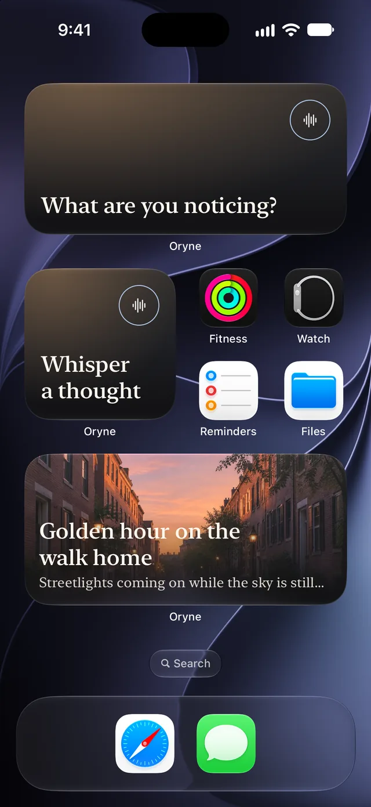
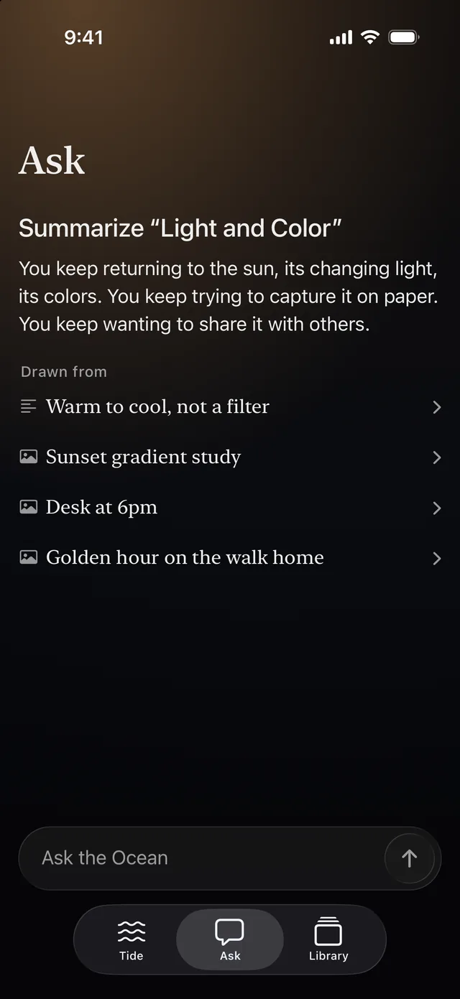
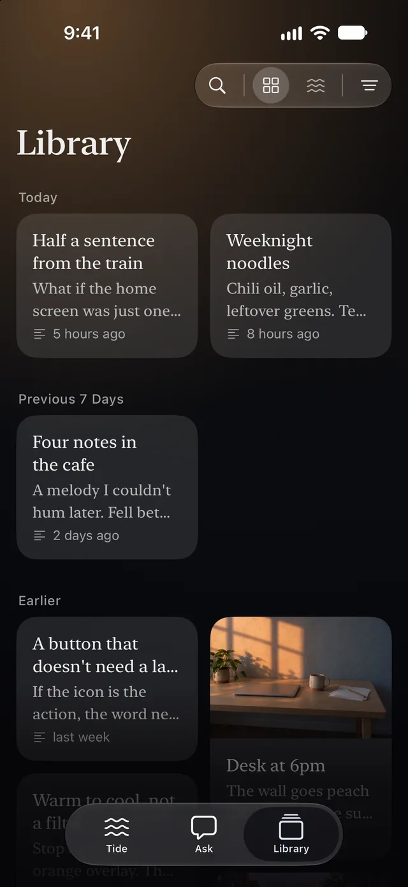
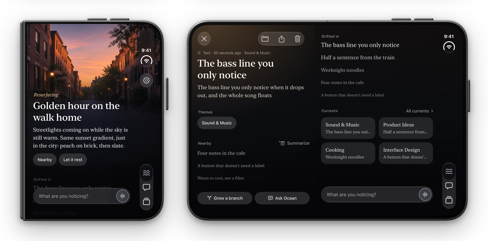

Branch
Grow an idea without losing the original.
Branch a thought into a question, research, or a project. The original stays as you wrote it.

For iPhone and iPad
A calm home for your ideas. Speak or type, and Oryne keeps them, gathers them, and brings them back.


How it works
Capture
Fast Capture
Gather
Resurface
Ask
Capture
Speak, type, snap, or share. Oryne takes each thought as it comes, with nothing to file.

Fast Capture
Set the Action Button once. One press, and Oryne is already listening, from anywhere.

Currents
Related thoughts gather into currents on their own. No folders, no tags.

Resurfacing
Each day, one thought you haven't seen in a while comes back, on Tide and on your Home Screen.

Ask
Ask in your own words. Every answer shows the thoughts it came from.
Answers are written on your device by Apple Intelligence, on supported models. Without it, Oryne still finds the matching thoughts.

Branch
Branch a thought into a question, research, or a project. The original stays as you wrote it.

Library
Search everything, or browse by day or by current.

iPhone Duo
Closed, it's the Oryne you know. Open it, and the same pages spread across both halves.
Arrives with the next update.

| A typical notes app | Oryne | |
|---|---|---|
| Saving an idea | Open the app, make a note, name it, pick a folder. | Hold one button and speak. |
| From anywhere | Find the app, wait for it to open. | One press of the Action Button, already listening. |
| Staying organized | Up to you, forever. | Related ideas gather on their own. |
| Old ideas | Sink out of sight. | Come back, one a day. |
| Finding something | Guess the right keyword. | Ask in your own words and see the sources. |
| Making sense of it all | Read every note again. | Summarize a whole current in one tap. |
| Growing an idea | Edit over the original. | Branch it. The original stays. |
Privacy
No account, and your thoughts never have to leave your devices.
iPhone with iOS 18 or later, and iPad with iPadOS 18 or later. Answers written by Apple Intelligence need iOS 26 and a model that supports it.
No. Oryne syncs through your iCloud, and works fully without it.
On your devices, and in your private iCloud if you use it. We can't see them.
Yes. Capturing, currents, resurfacing, and Ask all work without a connection. Link previews need one, and so does voice transcription in languages your device can't transcribe on its own.
Yes. Oryne speaks English and 简体中文. Choose in Settings › Oryne › Language.
Yes. In Oryne's Settings, Export the Ocean saves everything as Markdown files, one per current, with a JSON backup.
Settings › Action Button › Shortcut › Start Fast Capture. You can also add Oryne's Fast Capture button to Control Center.
Your next idea is on its way. Be ready for it.